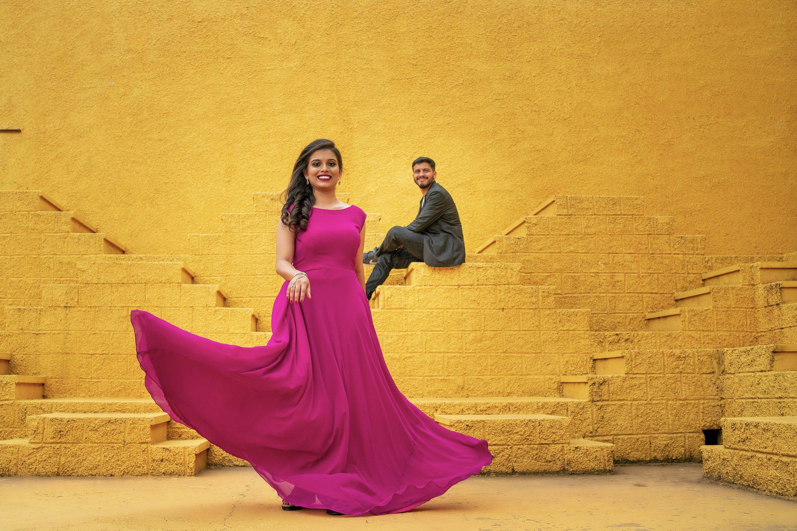

A Symphony of Love & Light
Wedding Photography & Films · Bangalore & Beyond
We photograph the day as it actually happens.


You will miss most of your own wedding. You will be seated, garlanded and moved from one ritual to the next, while an uncle tells the story again across the hall, your mother fixes something on your shoulder without being asked, and your brother finally lets himself cry.
That is the half we are there for. We stay near enough to catch it and quiet enough that nobody straightens up as we pass — so what you are handed back is the day itself, not a record of people waiting for a photographer. Years from now it will be the only place some of these faces are still laughing like this.


Nobody here was told to smile.


Films
Every wedding gives us a thousand frames. A film is how we choose.


We celebrate the ones who are not afraid to experiment — the travellers, the rule breakers, the couples who want their wedding to look like themselves. Here are the films we make.

Pre-Wedding
The only part of all this
that belongs to just the two of you.
On the wedding day you belong to everyone — the families, the rituals, the schedule. A pre-wedding shoot is the reverse: a place you choose, nobody waiting on you, and enough time to stop noticing the camera. It is also the best preparation for the wedding itself — by the time the functions begin, being photographed is no longer new.
Ask about a pre-wedding shootKind Words

Ready To Meet Us?
Let's capture your love story
Dates fill up quickly through wedding season. Tell us a little about your day and we'll come back to you personally.
Enquire About Your Date